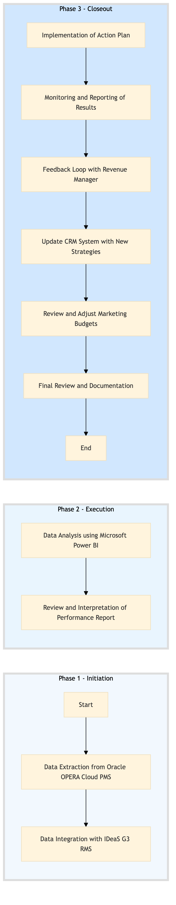

| Role | Steps |
|---|---|
| Revenue Manager | 1.1 1.2 3.1 3.4 |
| Marketing Analyst | 2.1 2.2 3.2 3.6 |
| Marketing Director | 2.2 3.3 3.5 |
| Marketing Manager | 3.1 3.3 3.4 |
| Finance Manager | 3.5 |
| Step | Name | Role | System | Input | Output | KPI | Dec? | Exc? | Pain Point / Risk |
|---|---|---|---|---|---|---|---|---|---|
| 1.1 | Data Extraction from Oracle OPERA Cloud PMS | Revenue Manager | Oracle OPERA Cloud | PMS data | Extracted data file | Completion within 2 hours | N | Y | Data extraction errors due to system updates |
| 1.2 | Data Integration with IDeaS G3 RMS | Revenue Manager | IDeaS G3 RMS | Extracted data file | Integrated data file | Completion within 1 hour | N | Y | Integration issues with outdated software |
| 2.1 | Data Analysis using Microsoft Power BI | Marketing Analyst | Microsoft Power BI | Integrated data file | Performance report | Report completion within 4 hours | N | Y | Slow performance due to large dataset |
| 2.2 | Review and Interpretation of Performance Report | Marketing Director | Microsoft Power BI | Performance report | Action plan | Decision within 1 day | Y | N | Lack of clear insights from data |
| 3.1 | Implementation of Action Plan | Marketing Manager | Oracle OPERA Cloud, SynXis CRS | Action plan | Updated marketing strategies | Implementation within 2 weeks | N | Y | Resistance to change from staff |
| 3.2 | Monitoring and Reporting of Results | Marketing Analyst | Microsoft Power BI, Oracle OPERA Cloud | Updated marketing strategies | Monthly performance report | Report completion within 1 week | N | Y | Inaccurate data entry affecting reporting |
| 3.3 | Feedback Loop with Revenue Manager | Revenue Manager, Marketing Analyst | Oracle OPERA Cloud | Monthly performance report | Improved action plan | Feedback loop within 1 week | Y | N | Misalignment between marketing and revenue goals |
| 3.4 | Update CRM System with New Strategies | Marketing Manager | Marriott Bonvoy CRM | Improved action plan | Updated CRM database | Completion within 1 week | N | Y | Data synchronization issues between systems |
| 3.5 | Review and Adjust Marketing Budgets | Finance Manager, Marketing Director | SAP S/4HANA | Monthly performance report | Adjusted budget plan | Decision within 1 week | Y | N | Budget constraints affecting marketing initiatives |
| 3.6 | Final Review and Documentation | Marketing Director, Revenue Manager | Microsoft Power BI | Adjusted budget plan | Final documentation | Completion within 1 day | N | Y | Documentation errors leading to miscommunication |
This process involves analyzing marketing performance data to optimize sales and loyalty programs at a Marriott full-service hotel.